<title>Identité visuelle Bimurix</title>
<meta name="claude:viewport-fit-sides" content="cover">
<link rel="preconnect" href="https://fonts.googleapis.com">
<link rel="preconnect" href="https://fonts.gstatic.com" crossorigin>
<link href="https://fonts.googleapis.com/css2?family=Archivo:wdth,wght@62..125,300..800&family=JetBrains+Mono:wght@400;500&display=swap" rel="stylesheet">
<style>
  /* Guide de marque en feuilles de plan : une section = une feuille numérotée (G-01…). */
  :root{
    --paper:#FFFFFF; --paper-2:#F4F7FB; --ink:#0F172A; --ink-2:#475569; --line:#CBD5E1; --blue:#0F52BA; --no:#C8372D;
    --display:"Archivo",system-ui,sans-serif; --mono:"JetBrains Mono",ui-monospace,monospace;
  }
  @media (prefers-color-scheme: dark){ :root:not([data-theme="light"]){
    --paper:#0B111D; --paper-2:#111A2B; --ink:#E7EDF5; --ink-2:#9BA9BC; --line:#2A3650; --blue:#6A9BE6; --no:#F07167; color-scheme:dark } }
  :root[data-theme="dark"]{ --paper:#0B111D; --paper-2:#111A2B; --ink:#E7EDF5; --ink-2:#9BA9BC; --line:#2A3650; --blue:#6A9BE6; --no:#F07167; color-scheme:dark }
  body{background:var(--paper-2);color:var(--ink);font:16px/1.55 var(--display)}
  .wrap{max-width:1120px;margin:0 auto;padding-block:40px 80px;padding-left:max(16px,env(safe-area-inset-left,0px));padding-right:max(16px,env(safe-area-inset-right,0px))}
  h1,h2{text-wrap:balance;margin:0}
  h1{font-size:clamp(32px,5vw,54px);line-height:1.02;font-weight:800;font-variation-settings:"wdth" 122;letter-spacing:-.015em;margin-bottom:14px}
  h2{font-size:clamp(22px,3vw,30px);line-height:1.1;font-weight:700;font-variation-settings:"wdth" 118}
  h3{font:500 12px/1.2 var(--mono);text-transform:uppercase;letter-spacing:.05em;color:var(--ink-2);margin:0 0 8px}
  p{margin:0;max-width:70ch} .lede{color:var(--ink-2)}
  code,.mono{font-family:var(--mono);font-size:.88em}
  .sheet{margin-top:56px;border-top:1.5px solid var(--ink);padding-top:20px;display:grid;gap:20px}
  .head{display:flex;flex-wrap:wrap;align-items:baseline;gap:8px 14px}
  .tag{font:500 12px/1 var(--mono);padding:6px 8px;border:1px solid var(--ink-2);color:var(--ink-2)}
  .grid{display:grid;grid-template-columns:repeat(auto-fill,minmax(260px,1fr));gap:12px}
  figure{margin:0;display:grid;gap:6px;min-width:0}
  figcaption{font:11.5px/1.4 var(--mono);color:var(--ink-2);overflow-wrap:anywhere}
  .tile{aspect-ratio:16/9;display:grid;place-items:center;padding:12%;border:1px solid var(--line);max-width:100%}
  .tile img{max-height:100%;width:100%;object-fit:contain}
  .tile.sq{aspect-ratio:1/1;padding:22%}
  .on-white{background:#FFFFFF}.on-blue{background:#0F52BA;border-color:#0F52BA}.on-navy{background:#0F172A;border-color:#0F172A}
  .shot{border:1px solid var(--line);display:block;width:100%;height:auto;background:#fff}
  .icons{display:flex;flex-wrap:wrap;align-items:flex-end;gap:18px;background:var(--paper);border:1px solid var(--line);padding:18px}
  .icons img{display:block}
  .swatches{display:grid;grid-template-columns:repeat(auto-fill,minmax(200px,1fr));gap:12px}
  .sw{border:1px solid var(--line);background:var(--paper)}
  .sw div{height:96px}
  .sw p{padding:10px 12px;font:12.5px/1.5 var(--mono)}
  .sw b{font:700 15px var(--display);display:block}
  .rules{display:grid;grid-template-columns:repeat(auto-fill,minmax(240px,1fr));gap:12px}
  .rules div{background:var(--paper);border:1px solid var(--line);padding:16px 18px}
  .rules ul{margin:0;padding-inline-start:18px;display:grid;gap:6px;font-size:15px}
  .no h3{color:var(--no)}
  .type{background:var(--paper);border:1px solid var(--line);padding:20px;display:grid;gap:14px}
  .t1{font-size:clamp(28px,4vw,40px);font-weight:700;font-variation-settings:"wdth" 118;line-height:1.05}
  .t2{font-size:17px}
  .t3{font:14px var(--mono);color:var(--ink-2)}
  .tbl{overflow-x:auto}
  table{border-collapse:collapse;width:100%;min-width:640px;font-size:14px;background:var(--paper)}
  th,td{border:1px solid var(--line);padding:9px 12px;text-align:start;vertical-align:top}
  thead th{font:500 12px var(--mono);color:var(--ink-2);text-transform:uppercase;letter-spacing:.04em}
  td:first-child{font-family:var(--mono);font-size:12.5px}
</style>

<main class="wrap">
  <h1>Identité visuelle Bimurix</h1>
  <p class="lede">Logo «&nbsp;Croisement&nbsp;» et ses déclinaisons, prêts pour le site, LinkedIn, le courriel et l'imprimé.
    Tous les fichiers sont dans le dossier <code>identite-visuelle/</code>&nbsp;; le tableau G-07 dit lequel prendre selon l'usage.</p>

  <section class="sheet">
    <div class="head"><h2>Le logo</h2><span class="tag">G-01</span></div>
    <p>Le X est fait de deux traits. Le trait épais passe devant&nbsp;; le trait fin est coupé là où il passe derrière, comme un croisement de réseaux sur un dessin de coordination.
      Les lettres sont dessinées en vecteur à partir d'Archivo (largeur étendue, extra-gras)&nbsp;: aucun fichier ne dépend d'une police installée.</p>
    <div class="grid">
      <figure><div class="tile on-white"></div><figcaption>bimurix-logo-couleur · PRINCIPAL · BIM bleu nuit, URIX bleu</figcaption></figure>
      <figure><div class="tile on-white"></div><figcaption>bimurix-logo-gris · noir et blanc, deux tons</figcaption></figure>
      <figure><div class="tile on-navy"></div><figcaption>bimurix-logo-blanc · fonds foncés, photo</figcaption></figure>
      <figure><div class="tile on-blue"></div><figcaption>bimurix-logo-blanc · sur le bleu</figcaption></figure>
      <figure><div class="tile on-white"></div><figcaption>bimurix-logo-bleu · une couleur</figcaption></figure>
      <figure><div class="tile on-white"></div><figcaption>bimurix-logo-marine · une couleur</figcaption></figure>
      <figure><div class="tile on-white"></div><figcaption>bimurix-logo-noir · tampon, gravure, télécopie</figcaption></figure>
    </div>
  </section>

  <section class="sheet">
    <div class="head"><h2>Déclinaisons</h2><span class="tag">G-02</span></div>
    <p>Empilé pour les formats carrés et le verso de carte. Avec icône pour les en-têtes où le nom et le symbole doivent apparaître ensemble.</p>
    <div class="grid">
      <figure><div class="tile on-white"></div><figcaption>bimurix-logo-empile-couleur</figcaption></figure>
      <figure><div class="tile on-white"></div><figcaption>bimurix-logo-empile-gris</figcaption></figure>
      <figure><div class="tile on-navy"></div><figcaption>bimurix-logo-empile-blanc</figcaption></figure>
      <figure><div class="tile on-white"></div><figcaption>bimurix-logo-icone-couleur</figcaption></figure>
      <figure><div class="tile on-white"></div><figcaption>bimurix-logo-icone-gris</figcaption></figure>
      <figure><div class="tile on-navy"></div><figcaption>bimurix-logo-icone-blanc</figcaption></figure>
    </div>
  </section>

  <section class="sheet">
    <div class="head"><h2>Symbole et icônes</h2><span class="tag">G-03</span></div>
    <p>Le X seul remplace le logo quand la place manque&nbsp;: favicon, photo de profil, autocollant de casque. L'icône blanche (X bleu et bleu nuit, comme le logo) est la version principale.</p>
    <div class="icons">
      
      
      
      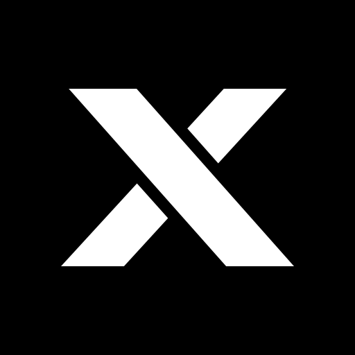
      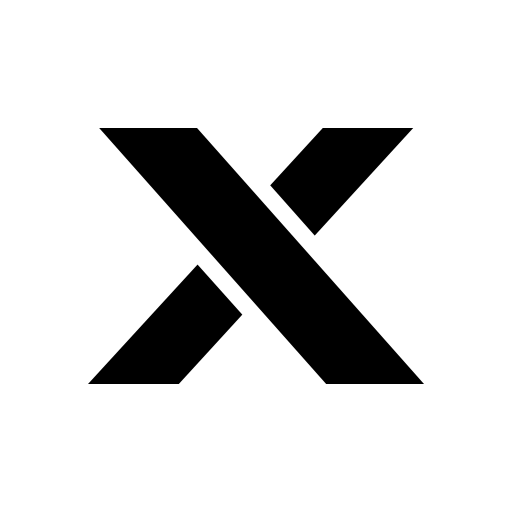
      
      
      
    </div>
    <div class="grid">
      <figure><div class="tile sq on-white"></div><figcaption>bimurix-symbole-x-couleur</figcaption></figure>
      <figure><div class="tile sq on-white"></div><figcaption>bimurix-symbole-x-gris</figcaption></figure>
      <figure><div class="tile sq on-navy"></div><figcaption>bimurix-symbole-x-blanc</figcaption></figure>
    </div>
  </section>

  <section class="sheet">
    <div class="head"><h2>Couleurs</h2><span class="tag">G-04</span></div>
    <p>Deux couleurs de marque, le blanc et un gris pour le texte secondaire. Pas de cyan ni de bleu clair, pas de dégradé.</p>
    <div class="swatches">
      <div class="sw"><div style="background:#0F52BA"></div><p><b>Bleu Bimurix</b>#0F52BA<br>RGB 15 82 186</p></div>
      <div class="sw"><div style="background:#0F172A"></div><p><b>Bleu nuit</b>#0F172A<br>RGB 15 23 42</p></div>
      <div class="sw"><div style="background:#FFFFFF;border-bottom:1px solid #CBD5E1"></div><p><b>Blanc</b>#FFFFFF<br>RGB 255 255 255</p></div>
      <div class="sw"><div style="background:#475569"></div><p><b>Gris ardoise</b>#475569<br>texte secondaire</p></div>
      <div class="sw"><div style="background:#6B7280"></div><p><b>Gris logo</b>#6B7280<br>URIX en noir et blanc</p></div>
    </div>
    <p class="lede">Pour l'imprimé (CMJN ou Pantone), faire valider les équivalences par l'imprimeur sur une épreuve&nbsp;: les conversions automatiques varient selon le papier.</p>
  </section>

  <section class="sheet">
    <div class="head"><h2>Typographie</h2><span class="tag">G-05</span></div>
    <div class="type">
      <div><h3>Titres · Archivo, largeur étendue, gras</h3><div class="t1">Des modèles fiables.</div></div>
      <div><h3>Texte · Archivo, largeur normale</h3><div class="t2">Des installations mieux préparées. Des données exploitables.</div></div>
      <div><h3>Données · JetBrains Mono, seulement pour cotes, références, numéros</h3><div class="t3">Feuille M-201 · Niveau 02 · Tronçon CH-14</div></div>
    </div>
    <p class="lede">Les deux familles sont gratuites (licence SIL Open Font) sur Google Fonts. Dans Outlook et Gmail, la signature utilise Arial.</p>
  </section>

  <section class="sheet">
    <div class="head"><h2>Règles d'usage</h2><span class="tag">G-06</span></div>
    <div class="rules">
      <div><h3>Espace de protection</h3><p>Garder autour du logo un vide égal à la moitié de la hauteur des lettres. Rien n'y entre&nbsp;: texte, bord de page, photo.</p></div>
      <div><h3>Taille minimale</h3><p>Logotype&nbsp;: 96&nbsp;px de large à l'écran, 25&nbsp;mm imprimé. En dessous, utiliser l'icône (lisible dès 16&nbsp;px).</p></div>
      <div><h3>Choisir la version</h3><p>Fond clair&nbsp;: couleur (par défaut). Fond bleu, bleu nuit, noir ou photo&nbsp;: blanc. Noir et blanc&nbsp;: gris (deux tons) ou noir. Une seule encre&nbsp;: bleu, marine ou noir.</p></div>
      <div class="no"><h3>À ne pas faire</h3><ul>
        <li>Ajouter du cyan, un bleu clair ou un dégradé.</li>
        <li>Mettre le logo couleur sur le bleu nuit&nbsp;: le bleu disparaît.</li>
        <li>Étirer, pencher, ajouter une ombre ou un contour.</li>
        <li>Refermer la coupure du X ou remplacer le X par celui d'une police.</li>
        <li>Réécrire «&nbsp;Bimurix&nbsp;» dans une autre police à la place du logo.</li>
      </ul></div>
    </div>
  </section>

  <section class="sheet">
    <div class="head"><h2>Formats prêts à l'emploi</h2><span class="tag">G-07</span></div>
    <div class="grid">
      <figure>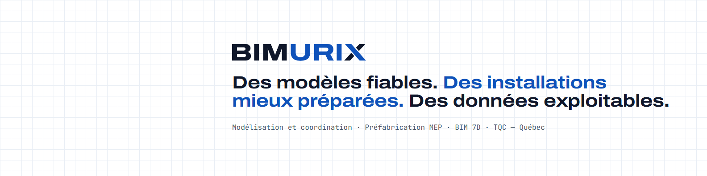<figcaption>LinkedIn · bannière profil 1584×396 (clair, bleu, marine, noir-blanc)</figcaption></figure>
      <figure>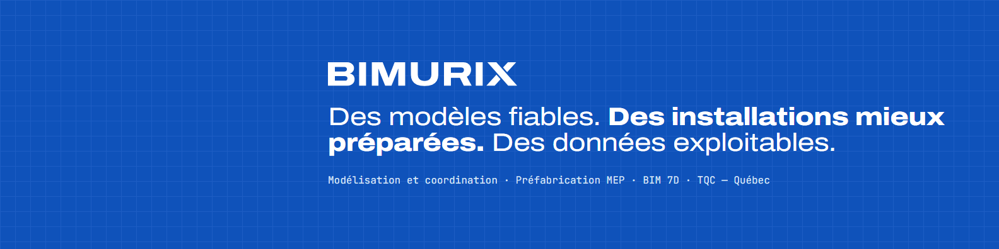<figcaption>LinkedIn · bannière profil, version bleue</figcaption></figure>
      <figure>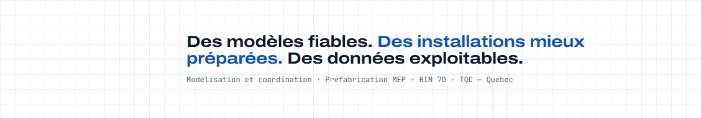<figcaption>LinkedIn · bannière page entreprise 1128×191</figcaption></figure>
      <figure>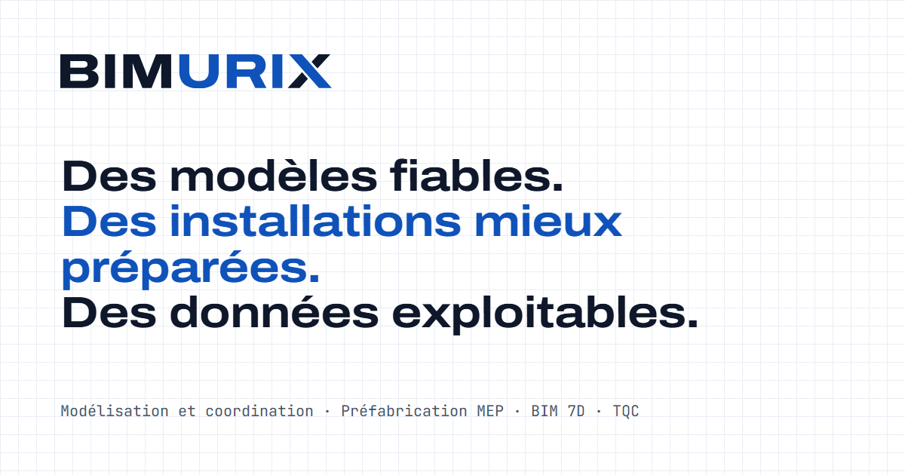<figcaption>Site · image de partage 1200×630</figcaption></figure>
      <figure>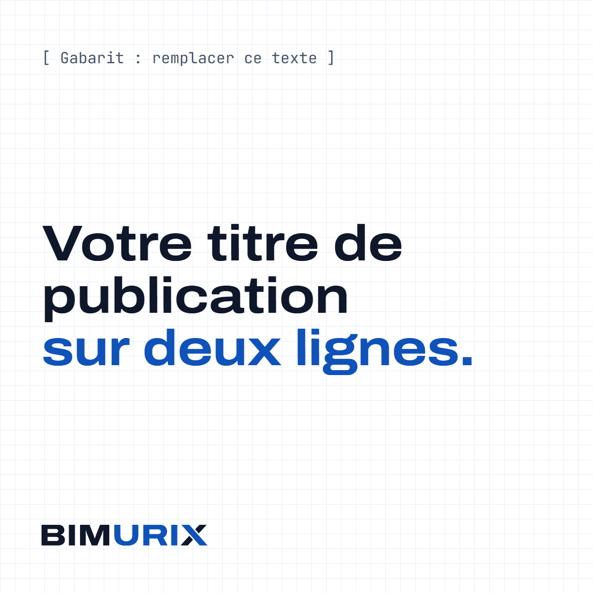<figcaption>LinkedIn · gabarit publication 1200×1200</figcaption></figure>
      <figure>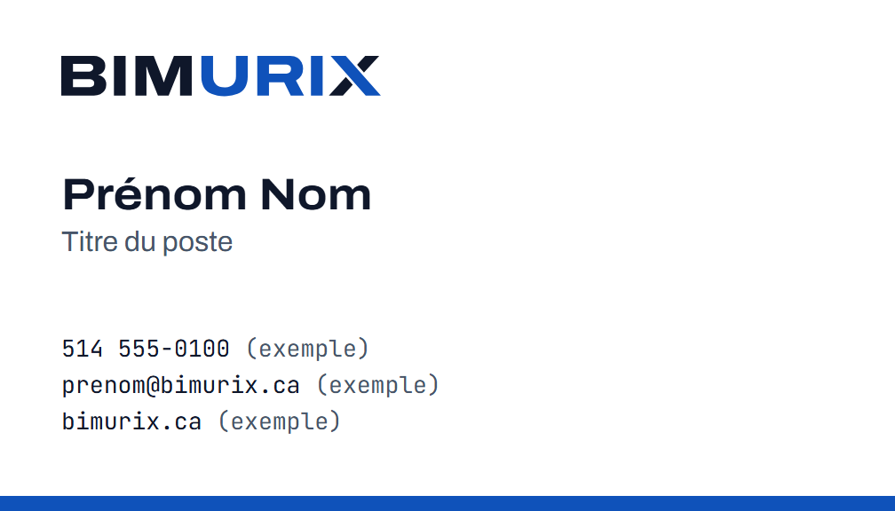<figcaption>Carte d'affaires 3,5×2 po · recto (PDF dans 05-imprime)</figcaption></figure>
      <figure>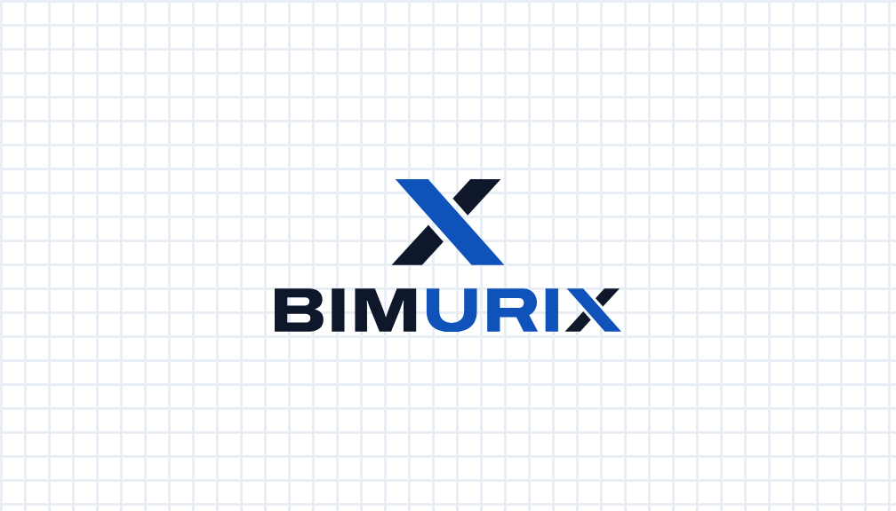<figcaption>Carte d'affaires · verso</figcaption></figure>
      <figure>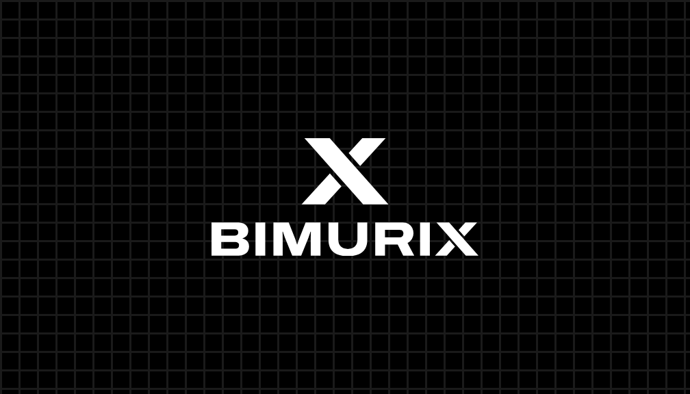<figcaption>Carte d'affaires · version noir et blanc</figcaption></figure>
      <figure>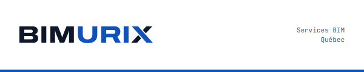<figcaption>Courriel · en-tête d'infolettre 600×120</figcaption></figure>
    </div>
    <div class="tbl"><table>
      <thead><tr><th>Fichier</th><th>Où l'utiliser</th></tr></thead>
      <tbody>
        <tr><td>01-logo/svg/*.svg</td><td>Site web, Sanity, présentations, tout logiciel qui accepte le SVG. Toujours préférer le SVG.</td></tr>
        <tr><td>01-logo/png/*.png</td><td>Word, PowerPoint, Canva&nbsp;: fond transparent, 600 à 2400&nbsp;px de large.</td></tr>
        <tr><td>02-site-web/</td><td>favicon.ico, favicon.svg, apple-touch-icon, icônes 192/512, manifeste et images de partage&nbsp;: à copier dans <code>web/public/</code> avec <code>head-snippet.html</code>.</td></tr>
        <tr><td>03-linkedin/logo-page-entreprise-*</td><td>Logo de la page entreprise (400×400).</td></tr>
        <tr><td>03-linkedin/banniere-*</td><td>Page entreprise 1128×191, profil personnel 1584×396. Le texte est décalé à droite pour laisser la place à la photo de profil.</td></tr>
        <tr><td>03-linkedin/gabarit-*</td><td>Fonds de publication carré, lien, portrait. Le titre est un exemple à remplacer.</td></tr>
        <tr><td>04-courriel/signature-*.html</td><td>Deux signatures. Déposer les PNG sur le site, remplacer VOTRE-DOMAINE et les valeurs marquées (exemple), puis coller dans Outlook ou Gmail.</td></tr>
        <tr><td>05-imprime/*.pdf</td><td>Logo vectoriel et carte d'affaires pour l'imprimeur. Coordonnées de la carte = exemples.</td></tr>
        <tr><td>06-reseaux/avatar-*</td><td>Photo de profil Facebook, Instagram, Google Business (1080×1080).</td></tr>
        <tr><td>07-sources/</td><td>Scripts qui regénèrent tout le dossier (géométrie du X, exports).</td></tr>
        <tr><td>99-archive/</td><td>Planches de départ et pistes non retenues. Ne pas utiliser.</td></tr>
      </tbody>
    </table></div>
  </section>
</main>
